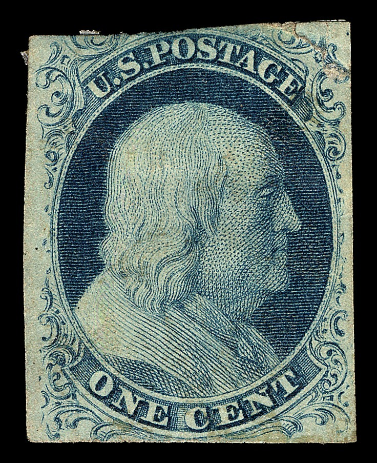

Mint Matters
Stamp collections and their estimated values
Stamps are more than just pieces of paper; they often commemorate important historical events, figures, or milestones. For collectors, owning a stamp is like owning a piece of history.
The staggering valuations of certain stamps, can seem absurd. But how are these figures determined? It’s a combination of rarity, condition, historical significance, and original price that drives its worth. Each stamp's story, including its rarity due to printing errors or limited releases, plays a significant role in its eventual price.

Let’s take a closer look at how these factors come together to estimate the market value of the Smithsonian’s collection of 1412 CC0 postage stamps.
Let’s drill down on these individual factors. You can drag the corners of the bars to adjust each filter. The left shows the lowest values for each category, while the right shows the highest values
These are all the stamps that fall in the following criteria:
Original price: x and y
Rareness: x and y
Vibrancy: x and y
Condition: x and y
Single/sheet: x and y